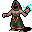

死人使い(モンスター) Necromancer (monster)
英語版 CrawlWiki の記事「Necromancer (monster)」(0.31 向け、2024-04-28 版)の翻訳です。原文の著者は編集履歴をご覧ください。
この記事は 0.31 の時点の内容で、最新の 0.34 とは違うところがあるかもしれません。
| 死人使い p  | |
|---|---|
| HP | 26-54 |
| HD | 10 |
| XP | 614 |
| 速度 | 10 |
| AC | 2 |
| EV | 13 |
| 意志力 | 60 |
| 攻撃1 | 6 (打撃: 通常)
|
| 耐性 | なし |
| 弱点 | なし |
| 生息地 | 陸上 |
| 知能 | 人間並み |
| 使用 | 武器と防具 初期装備 扉を開ける |
| 分類 | 生物 |
| 体格 | 中くらい |
| 種類 | 人間、人間 |
| フラグ | 邪悪 話す 温血 |

| 死の魔術の実践、不浄なる力の支配、そして死体を生命のまがいものとして蘇らせることに身を捧げた、邪悪な魔術師だ。
(著作権のある引用のため本文は省略) |
基本情報
死人使いは死霊術と妖術を使う邪悪な呪文使いで、派生アンデッドの手下を引き連れていることが多い。たいてい地下墓地や宝物庫、迷宮の深いほうの階に出るほか、ある氷の洞穴の最深部では幻像の軍団とともに現れる。
呪文
小技
- 苦悶の呪文は、単体を狙う拷問のようなものだと考えるとよい。拷問とちがって射線が通っている必要があり、意志力が高ければ完全に防げる。そのほかの点では、負のエネルギーへの耐性で痛みを和らげられ、樹木化の薬を飲めば完全に効かなくなる。
- 衰弱の矢に気をつけよう。この矢はアンデッドのモンスターを素通りしてくる。